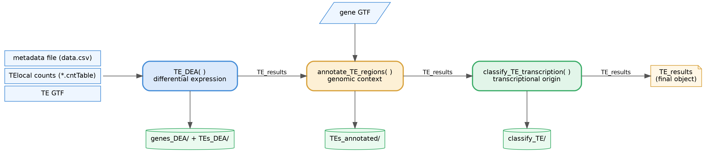

Comprehensive tools for analyzing transposable element (TE) expression, genomic annotation, and transcriptional classification.
TExpress provides a complete workflow for differential expression analysis
of transposable elements, including:
- Statistical analysis using DESeq2
- Genomic context annotation relative to protein-coding genes
- Visualization of TE expression patterns
- Classification of TEs by transcriptional origin (self-expressed vs. gene-dependent)
Transposable Elements in Development and in Disease - Sara R. Heras lab
Pipeline
TExpress is organized as a three-stage pipeline. Each function consumes and extends a single TE_results object, so the output of one stage is the input of the next:

TE_DEA() runs the differential expression analysis, annotate_TE_regions() adds genomic-context annotation, and classify_TE_transcription() labels each TE as self-expressed or gene-dependent. A detailed diagram showing the functions called inside each stage is available in man/figures/pipeline.svg.
{kind=link}
Installation
Install the development version from GitHub:
# Install remotes if needed
if (!requireNamespace("remotes", quietly = TRUE)) {
install.packages("remotes")
}
# Install TExpress
remotes::install_github("GuillePeris/TExpress") Please, notice that there is an issue with gghalves packages that can be solved following this link.
Quick Start
library(TExpress)
# Download test data
my.data <- downloadTestData()
# Run differential expression analysis
TE_results_DEA <- TE_DEA(
metafile = my.data$metafile,
folder = my.data$folder,
gtf.TE.file = my.data$gtf.TE.file,
output = "results",
plot.title = "My Analysis"
)
# Annotate TEs with genomic context
TE_results_annot <- annotate_TE_regions(
TE_results = TE_results_DEA,
gtf.genes.file = my.data$gtf.gene.file,
output_folder = "results"
)
# Classify TEs as self-expressed or gene-dependent
TE_results_classify <- classify_TE_transcription(TE_results_annot,
output_folder = "results"),Input Requirements
1. TE Count Files
TExpress is designed to work with count tables generated by TElocal from the TEtranscripts package. Follow TElocal reccomendations to run this software.
Please, notice that you have to download an pre-built TE annotation to run TElocal. If you want to use your own TE annotation, follow instructions here.
Also, you should be aware that all reads overlapping gene feature annotation and TE annotation in the same strand are assigned to genes by TElocal. If you are interested in restricting you gene annotation to only some features (for example, protein_coding and lncRNA) you can use TExpress function filter_GTF:
gtf.genes.file <- "Homo_sapiens.GRCh38.115.gtf"
filter_GTF(gtf.genes.file,
features = c("protein_coding"),
format.in = "gtf",
format.out = "gtf",
suffix = "filtered")2. Metadata File
A tab-separated text file describing your samples. The file must contain exactly four columns with specific headers and requirements:
| Column | Description | Requirements |
|---|---|---|
File |
TE count file names | Must match files in count directory |
Sample |
Unique sample identifiers | Used as column names in output |
Group |
Sample group labels | For organizing samples |
Condition |
Experimental condition | Must be “Control” or “Treat” |
Example metadata file:
File Sample Group Condition
TElocal_WT1.cntTable WT1 WT Control
TElocal_WT2.cntTable WT2 WT Control
TElocal_WT3.cntTable WT3 WT Control
TElocal_WT4.cntTable WT4 WT Control
TElocal_KO1.cntTable KO1 KO Treat
TElocal_KO2.cntTable KO2 KO Treat
TElocal_KO3.cntTable KO3 KO Treat
TElocal_KO4.cntTable KO4 KO Treat⚠️ Important: The
Conditioncolumn must contain exactly “Control” and “Treat” (case-sensitive) for DESeq2 analysis.
Workflow
Step 1: Differential Expression Analysis
Perform statistical analysis to identify differentially expressed TEs between conditions.
library(TExpress)
# Download test data (or specify your own paths)
my.data <- downloadTestData()
# Define parameters
metafile <- my.data$metafile # Path to metadata file
folder <- my.data$folder # Directory with count files
gtf.TE.file <- my.data$gtf.TE.file # TE annotation GTF
output <- "results" # Output directory
maxpadj <- 0.05 # Adjusted p-value threshold
minlfc <- 1 # Log2 fold change threshold (2-fold)
device <- c("png", "svg") # Output formats for plots
plot.title <- "DGCR8-KO vs WT" # Title for plots
# Run differential expression analysis
TE_results <- TE_DEA(
metafile = metafile,
folder = folder,
output = output,
maxpadj = maxpadj,
minlfc = minlfc,
gtf.TE.file = gtf.TE.file,
device = device,
plot.title = plot.title
)Output:
- DESeq2 results for genes and TEs (separate directories)
- Normalized count matrices
- Volcano plots and MA plots
- Summary statistics
TE Nomenclature
TExpress uses a hierarchical classification system for TEs:
TE_element : TE_name : TE_family : TE_classExample: L1PA2_dup501:L1PA2:L1:LINE
- TE_class: Broad category (LINE, SINE, LTR, DNA)
- TE_family: Family within class (L1, Alu, ERVK, etc.)
- TE_name: Specific TE type (L1PA2, AluY, etc.)
- TE_element: Individual genomic locus (L1PA2_dup501)
This hierarchy allows flexible visualization at different taxonomic levels.
Step 2: Genomic Context Annotation
Annotate TEs with their genomic location relative to protein-coding genes.
TE_results <- annotate_TE_regions(
TE_results = TE_results,
gtf.genes.file = my.data$gtf.gene.file,
output_folder = output,
device = c("png", "svg"),
plot.title = plot.title,
minCounts = 10 # Minimum normalized counts for inclusion
)Output:
- Annotated TE results with genomic coordinates
- Gene associations (nearest gene for each TE)
- Stacked bar plots showing:
- Distribution across genomic regions (Promoter, Exon, Intron, etc.)
- Distribution across TE classes (LINE, SINE, LTR, DNA)
Genomic Regions Annotated:
- Promoter: Within 1000 bp (default) upstream/downstream of TSS
- 5’ UTR: Five-prime untranslated region
- Exon: Protein-coding exons
- Intron: Intronic regions
- 3’ UTR: Three-prime untranslated region
- Downstream: Up to 10kb (default) downstream of gene end
- Intergenic: Not associated with any gene feature
Step 3: Transcriptional Classification
Classify TEs as:
- Self-expressed: Transcribed from their own internal promoter
- Gene-dependent: Transcribed as part of host gene transcription (runthrough)
Use save variable to analyze “all” expressed TEs, “up”-regulated, “down”-regulated or “dys”-regulated (up+down).
TE_results_dys <- classify_TE_transcription(TE_results,
output_folder = output,
plot.title = plot.title,
save = "dys")Example Dataset
The package includes a test dataset from chromosome 22:
# Download to temporary directory
my.data <- downloadTestData()
# Or specify custom location
my.data <- downloadTestData(folder = "~/data/TExpress_test")Dataset details:
- Comparison: DGCR8-KO vs. WT
- Organism: Human (hg38)
- Chromosome: chr22 only (for quick testing)
- Replicates: 4 per condition
- Reference: GSE197472
Citation
If you use TExpress in your research, please cite it through zenodo DOI.

Peris, Guillermo. TExpress: Tools for analyzing transposable element expression (2026). https://doi.org/10.5281/zenodo.20382521.
Contact
Maintainer: Guillermo Peris Ripollés
Email: [peris@uji.es]
GitHub: @GuillePeris